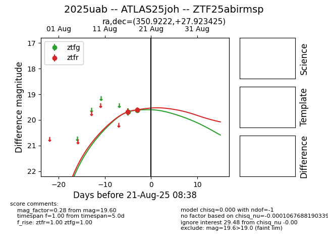

Target 2025uab at 2025-08-21 08:38, see:
FINK: fink-portal.org/ZTF25abirmsp
Lasair: lasair-ztf.lsst.ac.uk/objects/ZTF25abirmsp
ALeRCE: alerce.online/object/ZTF25abirmsp
TNS: wis-tns.org/object/2025uab
YSE: ziggy.ucolick.org/yse/transient_detail/2025uab
alt names
ZTF25abirmsp (ztf,alerce)
2025uab (tns,yse)
ATLAS25joh (atlas)
coordinates:
equatorial (ra, dec) = (350.9222,+27.92343)
galactic (l, b) = (100.2674,-31.05755)
photometry
last ztfg=19.62, ztfr=19.60
2 ztfg, 2 ztfr detections
